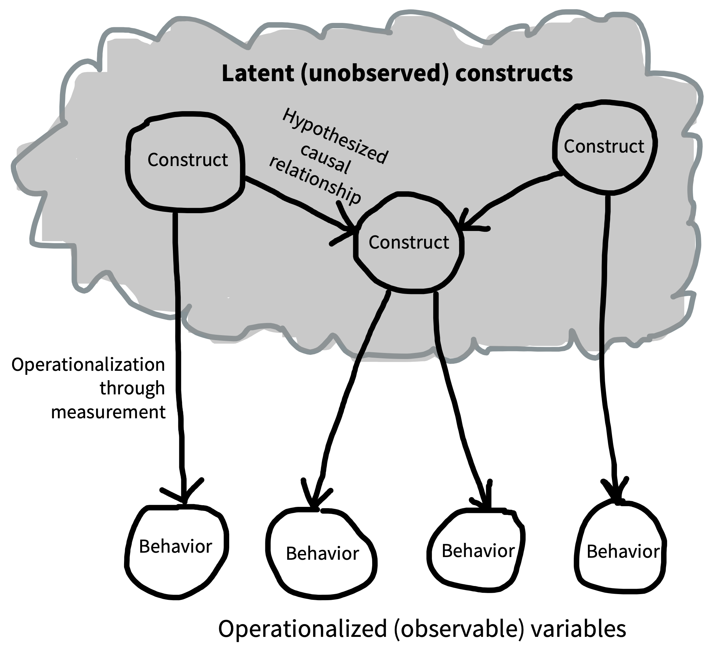
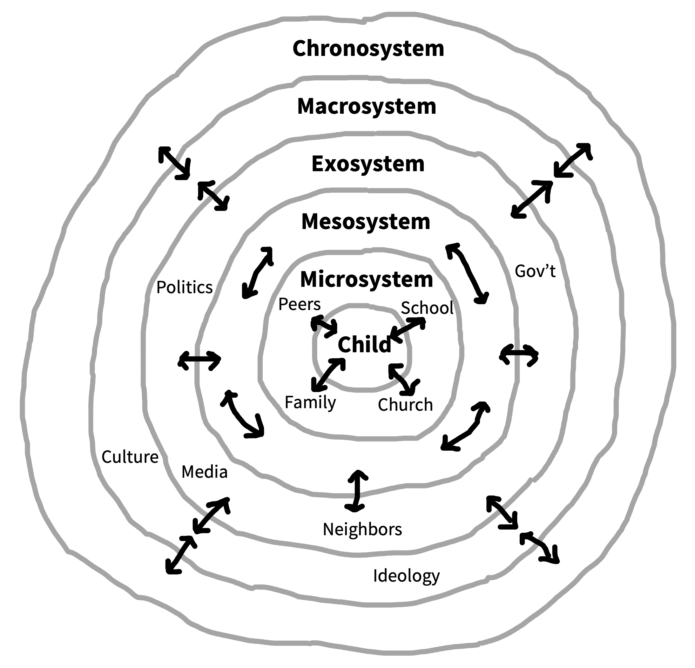
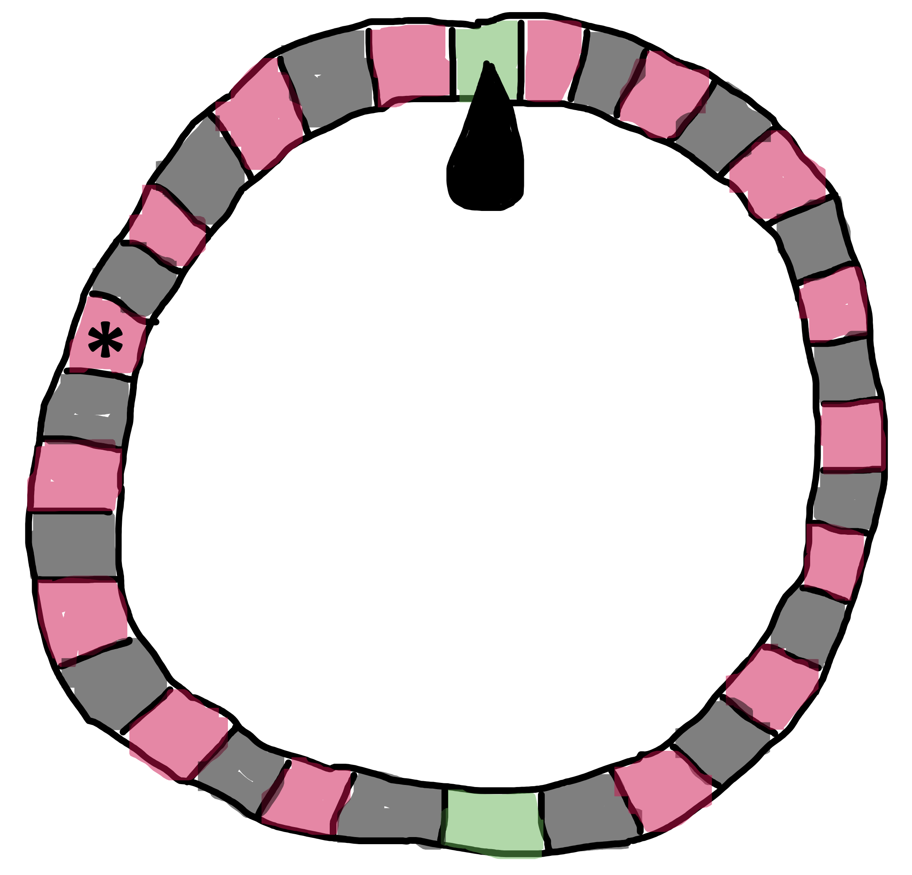
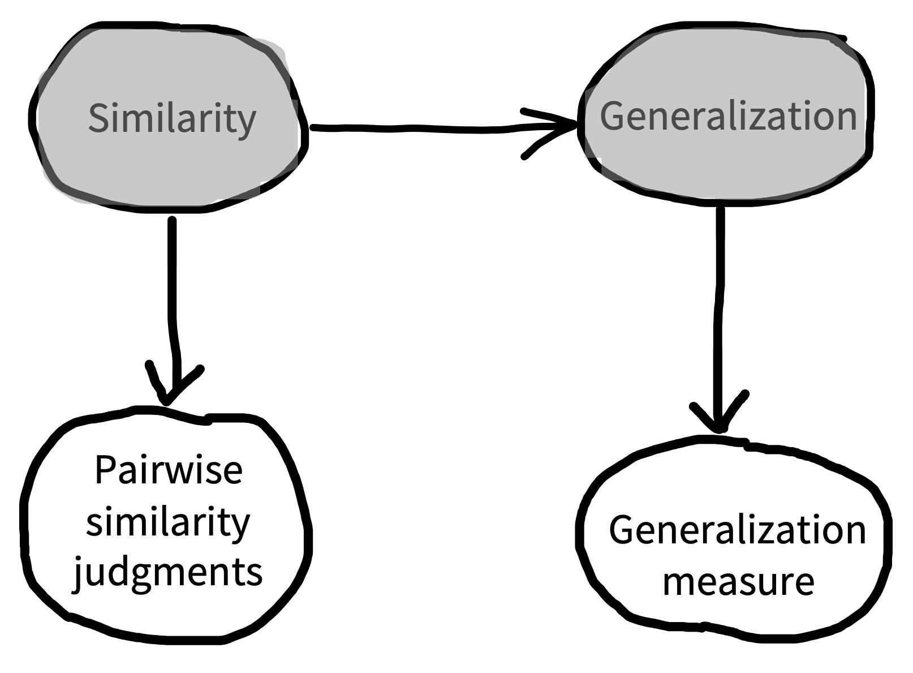
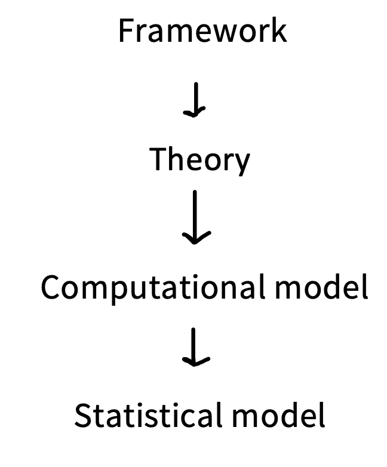

2 理论
- 定义理论及其组成部分
- 对比关于科学理论的不同哲学观点
- 分析实验的哪些特征能够形成对理论的强检验
- 讨论 formalization（形式化）在理论发展中的作用
当你做一个实验时，有时只是想看看会发生什么，就像小孩推倒一座积木塔。有时，你想回答一个具体的应用问题，比如：“期中考试和每周小测，哪一种会让班上学生在期末表现得更好？”但更多时候，我们的目标是建立能够帮助我们解释并预测新观察的 理论。
什么是理论？我们会在这里主张，心理学理论应被理解为 构念 之间一组被提出的关系；构念是我们认为在决定行为时发挥因果作用的变量。在这种理论观中，因果性 的角色是核心的：理论是关于心智因果结构、以及心智与世界之间因果关系的猜想。这个定义并不涵盖心理学中所有被称为“理论”的东西。我们会描述理论与 框架 之间的连续体：框架是一组指导研究的宽泛想法，但它们不会与具体经验观察产生特定接触。
本章开头会讨论构建心理学理论这项具体工作。接着，我们会讨论理论如何与数据发生接触，简要回顾一点科学哲学，并给出一些关于如何构建能够检验理论的实验的建议。最后，我们会讨论理论与定量模型之间的关系。这些内容会触及本书的几个主题，包括理论的 generalizability（可推广性），以及为了强有力地检验理论而需要 measurement precision（测量精度）。
2.1 什么是心理学理论？
我们刚才给出的心理学理论定义是：它是一组被提出的构念之间的因果关系，能够帮助我们解释行为。我们先看看理论的组成材料：构念，以及构念之间的关系。然后再讨论这个定义与心理学中其他被称为“理论”的东西有什么关系。
2.1.1 心理学构念
构念是我们希望理论描述的心理变量，就像上一章例子中的“金钱”和“幸福”。乍看之下，我们似乎没必要专门给这些变量起一个名称。但在探究金钱与幸福之间的关系时，我们必须想办法测量幸福。比如，我们可以直接问人们“你有多幸福？”，让他们在 1（痛苦）到 10（欣喜）的量表上评分。
现在，假设某个研究参与者报告自己在这个量表上是 8 分。这真的是他们的幸福程度吗？如果他们评分时并没有很认真呢？如果他们以为研究者希望他们幸福呢？如果他们在与家人和朋友互动时表现得远没有这么幸福呢？
我们通过这样的说法来解决这个困境：我们收集到的自我报告评分，只是幸福这个 潜在构念 的一个 测量。这个构念是潜在的，因为我们永远无法直接看到它；但我们认为它会对测量产生因果影响：平均而言，更幸福的人应该给出更高的评分。不过，许多其他因素也会给测量带来噪声或偏差，因此我们不应该把这些评分误认为构念本身。
“你有多幸福？”这个具体问题，是从一般构念走向具体测量的一种方式。从构念走向能够被测量或操纵的具体实例，这个一般过程叫 operationalization（操作化）。幸福可以通过自我报告来操作化，但也可以通过许多其他方式操作化，比如测量个人短文中积极语言的使用，或者由朋友、家人或临床工作者来评分。如何用特定测量来操作化一个构念，是困难且后果重大的决定；我们会在 章 8 中详细讨论。每一种不同的操作化都可能适用于某个具体研究，但要把它们彼此连接起来，需要给出理由和论证。
提出某个特定构念，是建立理论中非常重要的一部分。例如，一位研究者可能担心，自我报告的幸福与周围人观察到的一个人的 well-being 很不一样，并据此主张幸福不是单一构念，而是一组不同构念。那这位研究者可能会惊讶地发现，幸福的自我报告与他人对一个人 well-being 的知觉高度相关 (Sandvik, Diener, 和 Seidlitz 1993)。1
1 有时，提出某个构念本身就是理论的关键部分。g（general intelligence，一般智力）是单构念理论的经典心理学例子。g theory 背后的想法是，一般智力的最佳测量，是许多不同测试之间的共享方差。决定围绕一个统一的智力构念来理论化和测量，而不是围绕许多彼此分离的智力类型，这本身就是一个有争议的举动。
即使是金钱这样外部的、表面上非心理的变量，也不会直接对人产生影响，而是通过心理构念发挥作用。严肃地把金钱纳入心理学理论的研究者，会根据情境以不同方式思考人们对金钱的知觉。例如，有研究者讨论过，你手头有多少钱的重要性取决于薪水在一个月中的什么时候到账 (Ellwood-Lowe, Foushee, 和 Srinivasan 2022)；也有研究者把对长期财富积累的知觉，作为理解美国 White 和 Black families 可获得资源差异的一种方式 (Kraus 等 2019)。
最后，构念也可以通过操纵来操作化：在我们的金钱-幸福例子中，我们用一笔特定数额的现金礼物，在理论中操作化了“更多金钱”。希望通过这些例子你能看到，operationalization 是心理学研究者 craft 的重要组成部分：它把你感兴趣的一组抽象构念，转化为一个具体实验，其中包含操纵和测量，用来检验你的因果理论。我们会在 章 9 中进一步讨论这是如何完成的。
2.1.2 构念之间的关系
构念的意义，一部分来自自身定义和操作化，另一部分则来自它与其他构念之间的因果关系。Figure 2.1 展示了这类理论可能是什么样子的示意图。你可以看到，它看起来很像我们上一章介绍的 DAGs！这并不是巧合。这里的箭头同样描述了假设的因果联系。2
2 有时这类图会出现在一种叫 structural equation modeling 的统计方法中，其中圆圈代表构念，线条代表构念之间的关系。容易混淆的是，许多研究者也会用 structural equation models 来描述心理学理论。现在需要记住的重点是，它们是一种特定统计形式，而不是一般的理论建构工具；我们在这里想说的要点更一般。

这张由构念和假设组成的网络，就是 Cronbach 和 Meehl (1955) 所说的 “nomological network”：一组关于不同实体如何相互连接的主张。困难之处在于，关键构念从来无法被直接观察到。它们在人们头脑中。3 因此，研究者只能通过特定操作化来测量它们，从而间接探查它们。
3 我们并不是说这些构念应该对应特定脑结构。它们有可能对应，但很可能不会。心理构念并不等同于任何特定脑状态（尤其不等同于任何特定脑区），这种想法被哲学家称为 “multiple realizability”。哲学家大多同意，心理状态不能被还原为脑状态；当然，哲学家能同意任何事情已经很不容易 (Block 和 Fodor 1972)。
一种更诗意的说法是，构念组成的理论系统“仿佛漂浮在观察平面之上，并通过解释规则锚定到这个平面上” (Hempel 1952, p. 36)。所以，即便你的理论提出两个构念（比如金钱和幸福）之间有直接关系，你能做的最多也只是操纵一个操作化，并测量另一个操作化。如果这个操纵没有产生任何效应，可能是你错了，金钱并不会导致幸福；但也可能是你的操作化很差。
还有一种略微不同的方式来思考理论。理论提供了一种 压缩：把可能很复杂的数据压缩成一组小得多的一般因素。如果你有一长串数字，比如 \([2\ 4\ 8\ 16\ 32\ 64\ 128\ 256\ ...]\)，那么表达式 \(2^n\) 就是这串数字的一种压缩：它是一个很短的表达式，告诉你哪些数字在这个序列中，哪些不在。类似地，一个理论可以把大量观察（也许是许多实验的数据）压缩为构念之间的一小组关系。现在，如果你的数据有噪声，比如 \([2.2\ 3.9\ 8.1\ 16.1\ 31.7\ ...]\)，那么理论不会完美表示这些数据。但它仍然有用。
特别是，拥有一个理论能让你 解释 已观察到的数据，并 预测 新数据。对一个理论来说，这两件事都是好事。例如，如果“金钱导致幸福”这个理论是真的，我们就可以用它解释富人幸福水平更高这类观察。我们也可以预测发放 universal basic income 这类政策会对总体幸福产生什么影响。4 解释是好理论的重要特征，但用一个模糊理论在事后（post hoc）解释某个发现，也很容易欺骗自己。因此，理论的最佳检验通常是一个新的预测，下面我们会讨论这一点。
4 金钱和幸福之间的关系实际上比我们这里假设的复杂得多。例如，Killingsworth, Kahneman, 和 Mellers (2023) 描述了两组对金钱与幸福关系持不同观点的研究者之间的一次合作。
最后说明一点：因果图是一种非常有用的形式，但它会把因果关系的 generalizability 隐含起来。例如，更多金钱会让所有人更幸福，还是只会让特定年龄或特定文化背景的人更幸福？“这个理论适用于谁？”是我们对任何被提出的因果框架都应该提出的重要问题。
2.1.3 具体理论与一般框架
你可能会想：“心理学里到处都是理论，但它们看起来和你说的这些不太一样！”在心理学中，很少有被贴上“理论”标签的理论会描述清晰定义并被操作化的构念之间的因果关系。你也不常看到 DAGs， 尽管它们最近变得（稍微）更常见了 (Rohrer 2018)。
下面是一个被称为理论、但并不具备上述组成部分的例子。Bronfenbrenner 的 (1992) ecological systems theory (EST) 如 图 2.2 所示。这个理论的核心论点是：儿童发展发生在一组嵌套情境中，这些情境彼此影响，并进而影响儿童。这个理论影响极大。然而，如果把它当作因果理论来读，它几乎没有意义：几乎所有东西都以双向方式连接到所有东西，而且构念没有被操作化，因此很难弄清楚它会产生什么样的预测。

Ecological systems theory 并不是我们在本章主张意义上的理论，心理学中许多其他非常有意思的想法也是如此。它不是一组构念之间的因果关系，无法对未来观察产生具体预测。Ecological systems theory 更像是一组宽泛想法，说明什么类型的理论更有可能解释具体现象。例如，它提醒我们，儿童行为很可能受到范围极广的因素影响，因此任何单个理论都不能只关注单一因素，然后指望提供完整解释。在这个意义上，EST 是一个 framework：它指导并启发具体理论，也就是我们这里讨论的那种构念之间的因果关系集合，但它本身并不是理论。
像 EST 这样的 frameworks 往往非常重要。它们也能对实践产生巨大影响。例如，EST 支持社会工作中的一种模型，在这个模型中，儿童的需求不仅被看作特定内部发展问题的表现，也被看作一组重叠情境因素的结果 (Ungar 2002)。具体来说，当治疗师通过 EST lens 分析儿童处境时，可能更倾向于考察家庭、同伴和学校环境。
精确定义的理论和宽泛框架之间存在连续体。有些理论提出了相互连接的构念，但没有说明它们之间的关系，或者没有说明这些构念应该如何被操作化。因此，当你读到一篇论文声称提出了一个“理论”时，最好问一问：它是否描述了被操作化构念之间的具体关系？如果没有，它可能更像是一个 framework，而不是一个 theory。
糟糕理论的代价
理论发展并不只是为了知识本身；它也会影响建立在这些理论之上的技术和政策。
一个例子来自 Edward Clarke 臭名昭著的理论：他认为教育会对女性产生有害影响。Clarke 提出：（1）认知过程和生殖过程依赖同一固定能量池；（2）相对于男性，女性的生殖过程需要更多能量；（3）在教育等认知任务上消耗太多能量，会耗尽女性维持健康生殖系统所需的能量。基于 case studies，Clarke 认为教育会让女性生病、产生生育问题，并生下更虚弱的孩子。因此，他得出结论：“男孩必须以男孩的方式学习和工作，女孩必须以女孩的方式学习和工作” (Clarke 1884, p. 19)。
Clarke 的工作令人不寒而栗地展示了一个发展糟糕的理论会产生什么后果。在这个情境中，Clarke 既没有能让他测量构念的工具，也没有能测量构念之间因果联系的实验。相反，他只是强调那些与他的想法一致的 case studies（同时排除那些不一致的案例）。他的想法最终失宠了，尤其是在经受更严格检验之后。但 Clarke 的论证曾被用来试图劝阻女性接受高等教育，并阻碍了教育政策改革。
2.2 我们如何检验理论？
我们对心理学理论的看法是：它们描述不同构念之间的一组关系。我们该如何检验理论，并决定哪一个最好？我们会先描述 falsificationism（证伪主义），这是关于这个问题的一种历史观点，过去非常有影响，也与 章 6 中关于统计推断的想法有关。接着，我们会转向一种更现代的观点，即 holism（整体论），它承认理论与测量之间的相互连接。
2.2.1 Falsificationism（证伪主义）
许多科学家会认同的一种历史观点，是哲学家 Karl Popper 的 falsificationism。 尤其是，有一种简化版的 falsificationism 常常被实际工作的科学家重复，尽管它比 Popper 本人真正说过的东西粗糙得多！按照这种观点，科学理论是一组关于世界的假设，实例化了诸如金钱与幸福之间联系这样的主张。5 一个陈述之所以是科学假设，是因为它可以被与之矛盾的观察推翻（也就是说，它是 falsifiable 的）。例如，观察到一个彩票中奖者立刻变得抑郁，就会 falsify “收到金钱会让你更幸福”这个假设。
5 前面我们把“金钱导致幸福”这个主张当作一个理论。它确实是！只不过它是一个非常简单的理论，只有一个假设联系。
对于简化版 falsificationist 来说，理论永远不会被确认。构成理论各部分的假设是普遍陈述。你永远不能证明它们正确；你只能没有找到 falsifying evidence。看到数百人在收到钱后变得更幸福，并不能证明金钱-幸福假设在普遍意义上是真的。反例永远可能就在下一个转角。
这个理论并不能真正描述科学家如何工作。例如，科学家喜欢说自己的证据“支持”或“确认”了理论，而 falsificationism 拒绝这种说法。falsificationist 会说，确认是一种幻觉；理论只是幸存下来，可以在另一天继续接受检验。许多科学家并不喜欢这种严格的 falsificationist 视角。毕竟，如果我们观察到数百人在收到钱后变得更幸福，这似乎至少应该略微增加我们对“金钱导致幸福”的信心！6
6 另一种视角来自 Bayesian tradition，我们会在 chapters 5 和 6 中更多学习它。简而言之，Bayesians 认为，我们对特定假设的主观信念可以由概率来捕捉，而科学推理可以被描述为一种规范性的概率推理过程 (Strevens 2006)。Bayesian scientist 会在广泛的替代假设之间分配概率；越符合某个假设的观察，会提高该假设的概率 (Sprenger 和 Hartmann 2019)。
2.2.2 理论检验的 holism（整体论）观点
使我们拒绝严格 falsificationism 的关键问题，是这样一种观察：任何单个假设（理论的一部分）都无法独立被 falsify。相反，通常需要一大串所谓 auxiliary assumptions（辅助假设）（或 auxiliary hypotheses），才能把某个观察连接到理论 (Lakatos 1976)。例如，如果给某个具体的人钱没有改变他们的幸福，我们不会立刻抛弃“金钱导致幸福”这个理论。相反，问题可能出在任何一个 auxiliary assumption 上，比如我们对幸福的测量，或者我们选择给多少钱、什么时候给钱。理论的各个部分无法独立被证伪，这个想法有时被称为 holism。
holism 的一个后果是，数据与理论之间的关系并不总是直接的。一个出乎意料的观察未必会让我们放弃理论中的主要假设；相反，它常常会让我们质疑 auxiliary assumptions（例如我们如何操作化构念）。因此，在放弃“金钱导致幸福”这个理论之前，我们也许应该先尝试几种不同的幸福问卷。
更宽泛的 holism 观念，得到了关于科学如何进步的历史和社会学研究的支持，尤其体现在 Kuhn (1962) 的工作中。通过考察历史证据，Kuhn 发现科学革命似乎并不是由某个无可争辩的观察 falsify 一个理论陈述所导致的。相反，Kuhn 把科学家描述为主要在 paradigms（范式） 内工作：范式是一组问题、假设、方法、现象和解释性假设。
Paradigms 允许 Kuhn 所说的 normal science 活动，也就是在范式内部检验问题、解释新观察，或修改理论以适应这些范式。但 normal science 会被 crisis 时期打断：在这些时期，科学家开始质疑他们的理论和方法。危机并不是仅仅因为一个观察与当前理论不一致就会发生。更常见的是，领域会整体性地转向一个新范式，通常是因为出现了某个显著的解释或预测成功，而且这个成功往往完全超出了当前工作理论的范围。
总之，holism 的教训是，我们不能只是把理论直接放到证据面前，然后认为它们会被支持或推翻。相反，我们需要思考理论的范围（即它意图解释哪些现象和测量），也需要思考把理论连接到具体观察的 auxiliary hypotheses，也就是 operationalizations。
2.3 设计用于检验理论的实验

7 即使你不像 Popper 那样是 falsificationist，你仍然可以认为尝试 falsify 理论是有用的！虽然单个观察并不总是足以推翻理论，但寻找那些与理论最不一致的观察，仍然是一种很好的研究策略。
看待理论的一种方式，是理论让我们能够下注。如果我们对 图 2.3 中 roulette wheel 的一次旋转下注，赌它会显示红色而不是黑色，我们大约有 50% 的概率赢得赌注。赢下这样的赌注并不令人印象深刻。但如果我们喊出某个具体数字，这个赌注就更 risky，因为我们猜对的概率小得多。一个理论有很多机会出错的情形，叫 risky tests (Meehl 1978)。7
心理学中有很多 verbal theories。verbal theories 只做 qualitative predictions，因此很难有说服力地证明它们是错的 (Meehl 1990)。在我们关于金钱和幸福的讨论中，我们只是预期金钱增加时幸福会上升。我们会把任何幸福增加（即便非常小）都当作确认假设的证据。预测它会发生，有点像在 roulette wheel 上押红色：赢了并不令人惊讶，也不令人印象深刻。而在心理学中，verbal theories 常常预测多个因素会彼此交互。对这类理论来说，很容易说在某个特定情境中，其中一个因素“占主导”，这意味着你几乎可以预测任意方向的效应。
为了检验理论，我们应该设计实验来检验理论做出 “risky” 预测的 conditions。更强版本的金钱-幸福理论也许会提出，幸福会随收入的对数线性增加 (Killingsworth, Kahneman, 和 Mellers 2023)。这种关系的具体数学形式，以及把金钱更具体地操作化为收入，为关于新实验做出风险更高的下注创造了机会。这种情形更像是在 roulette wheel 上押某个具体数字：当你赢得这个赌注时，它才相当令人惊讶！8
8 理论常常是迭代发展的。一开始的理论通常不那么 precise，因此较少有 risky tests 的机会。通过收集数据并检验不同替代方案，通常可以把理论提炼得更具体，使它允许更 risky 的检验。正如下文所讨论的，用数学或计算模型 formalize 理论，是做出更具体预测、创造更 risky 检验的一条重要路径。
检验理论预测也需要精确的实验测量。当我们在 章 6 中开始测量实验估计的精度时，会看到估计越精确，与它不一致的取值就越多。在这个意义上，理论的 risky test 同时需要具体预测和精确测量。（想象你转动 roulette wheel，但看到的结果图像模糊到根本分不清球在哪里。这并没有什么用。）
即便理论做出了精确预测，它们仍可能过于灵活，以至于无法被检验。当一个理论有许多 free parameters，也就是能够拟合到特定数据集、并逐案改变理论预测的数值时，它常常能够预测范围很广的可能结果。这种灵活性会降低任何特定实验检验的价值，因为理论提出者总可以在事后说，错的是参数，而不是理论本身 (Roberts 和 Pashler 2000)。
消除这类灵活性的一种重要方式，是提前做出预测，并保持所有参数不变。preregistration 是做到这一点的好方法：实验者推导预测，并预先说明如何将这些预测与实验结果比较。我们会在 章 11 中更详细地讨论 preregistration。
到目前为止，我们主要关注的是检验单个理论。但最理想的情况是，一个理论能够做出其他理论不会做出的非常具体的预测。如果相互竞争的理论都预测金钱会在相同程度上增加幸福，那么即使预测再具体，与该预测关系一致的数据也无法区分这些理论。最能教给我们东西的实验，是这样一种实验：某种非常具体的数据模式，根据一个理论会被预测出来，而根据另一个理论则不会。9
9 我们可以利用这个来自 Bayesian statistics 的想法，通过考虑哪些 experimental conditions 能引出理论之间的差异，来试图弄清楚什么才是正确的实验。事实上，基于不同理论做出的预测来选择实验，在统计学中有很长历史 (Lindley 1956)；它通常被称为 optimal experiment design (Myung, Cavagnaro, 和 Pitt 2013)。这个想法是，如果你有两个或多个用数学或计算方式表述出来的理论，就可以在很多 conditions 下模拟它们的预测，并选择信息量最大的 conditions 来作为实际实验。
考虑了以上所有讨论后，作为一个试图提出具体研究想法的研究者，你应该做什么？我们的建议是：follow the theories。也就是说，对于你感兴趣的一般主题——无论是金钱与幸福、双语、概念的本质，还是抑郁——都要努力了解已有理论。并不是所有理论都会做出具体、可检验的预测，但希望其中有一些会！然后问：这些理论做出了哪些 “risky bets”？不同理论是否对同一个效应做出了不同下注？如果是，那就是你想测量的效应！
2.4 理论形式化
假设我们有一组想要理论化的构念。我们该如何描述自己关于它们之间关系的想法，使其能够产生可与其他理论比较的精确预测？正如一位作者所说，数学作为科学的词汇具有 “unreasonably effective” 的力量 (Wigner 1990)。事实上，至少在过去 50 年里，一直有人呼吁心理学理论需要更高程度的 formalization (Harris 1976)。
一条关于 generalization（泛化）的普遍定律？
你如何把已经知道的东西应用到新情境中？一个答案是：你使用那些在相似情境中已经有效的答案。不过，要做这种外推，你需要有一个相似性的概念。早期学习理论家试图测量相似性，方法是在某个刺激——比如投射出来的、特定大小的光圈——和奖励之间建立联结，并反复把它们一起呈现。在这种联结被学习之后，他们会通过呈现不同大小的光圈并测量对奖励的预期强度，来检验 generalization。这些实验产生了 generalization curves：刺激越相似，人和其他动物越可能做出相同反应，表明发生了 generalization。
Shepard (1987) 试图统一这些不同实验的结果。这个过程的第一步，是建立一个 stimulus space（刺激空间）。他使用一种叫 “multidimensional scaling” 的程序，根据刺激之间 generalization 的强度来推断刺激彼此有多接近。当他把 generalization 的强度按刺激在这个空间中的距离（即它们的相似性）作图时，他发现了一个极其一致的模式：随着相似性降低，generalization 会呈指数下降。
他认为，这描述了一条支配相似性与 generalization 之间关系的“普遍定律”，几乎适用于任何刺激：无论是圆圈大小、光斑颜色，还是语音之间的相似性。后来的工作甚至把同一个框架扩展到高度抽象的维度，例如不同类型数字之间的关系 (e.g., being even or being powers of 2; Tenenbaum 1999)。

Shepard 工作中展示的模式，是 inductive theory building（归纳式理论建构） 的一个例子。用我们正在发展的词汇来说，Shepard 运行了（或获得了来自）随机化实验的数据，其中操纵是刺激维度（例如圆圈大小），测量是 generalization strength。然后 Shepard 提出的理论是：刺激维度的操纵会改变刺激之间被知觉到的相似性。因此，他的理论连接了两个构念：刺激相似性和 generalization strength（图 2.4）。关键在于，他描述的因果关系并不只是 qualitative relationship，而是一个具体数学形式。
在论文结尾，Shepard (1987, p. 1323) 写道：“Possibly, behind the diverse behaviors of humans and animals, as behind the various motions of planets and stars, we may discern the operation of universal laws.” Shepard 的梦想很宏大，但它为心理学理论化定义了一个理想。
不存在一种适用于心理学所有领域的理论化方法 (Oberauer 和 Lewandowsky 2019; Smaldino 2020)。数学理论 (such as Shepard 1987; see the Depth box above) 长期以来都是一种工具，能让我们精确陈述特定关系。
计算或形式化 artifact 本身并不是心理学理论，但它们可以通过把构念映射到模型中的实体，并利用形式系统的原则来实例化心理学假设或前提，从而被用来创建心理学理论 (Guest 和 Martin 2021)。 然而，在许多情况下，陈述这样清晰而一般的定律似乎遥不可及。如果我们有更多 Shepard 式的理论家或理论，也许情况会更好。又或许，对大多数人类行为而言，这样的“普遍定律”本来就遥不可及。
另一种取向，是创建包含关于数据结构的实质性假设的统计模型。我们在数据分析中一直使用这类模型。问题是，即便这些模型确实包含关于数据结构的实质性假设，我们也常常不这样解释它们 (Fried 2020)。但如果我们明确考察这些假设，即使最简单的统计模型也可以成为建构理论的有用工具。
例如，如果我们建立一个简单的 linear regression model 来估计金钱与幸福之间的关系，我们就在提出这两个变量之间存在线性关系，也就是说，一个变量的增加总会导致另一个变量按比例增加。10 如果我们把这个模型拟合到一个特定数据集，就可以查看模型权重。我们的理论也许会变成类似这样的东西：“给人们 100 美元，会导致他们在自我报告量表上的幸福增加 0.2 分。”
10 线性模型在社会科学中无处不在，因为它们拟合起来很方便；但作为理论模型，它们极其贫乏。你可以用 linear regression 做很多事，但说到底，大多数有意思的过程都不是若干因素的线性组合！
显然，这个 regression model 并不是关于金钱与幸福之间更广泛关系的好理论，因为它意味着，如果你给每个人（最多）4,500 美元，那么每个人的幸福都会达到 10 点量表的最高值。它也没有告诉我们，这个理论如何 generalize 到其他人、其他幸福测量，或金钱心理表征的其他方面，如收入或财富。
从我们的视角看，这类问题并不是干扰项，而是从实验走向理论的关键工作 (Smaldino 2020)！在 章 7 中，我们会进一步展开这个想法，把常见统计检验重新理解为模型：它们可以被重新用于表达有实质内容的科学假设，同时我们也要承认这些模型假设的局限。

现代认知科学的优势之一，是它提供了一套非常丰富的工具，用来表达更复杂的统计模型，并把它们连接到数据。例如，现代 Bayesian cognitive modeling tradition 源自 Shepard 这类工作；在这些模型中，一组方程定义了一个 probability distribution，它可以用于估计参数、预测新数据，或进行其他推断 (Goodman, Tenenbaum, 和 The ProbMods Contributors 2016)。而 neural network models——如今正推动人工智能创新——也有很长一段被用作人类心理实质模型的历史 (Elman 等 1996)。理解这些替代方案的一种方式，是把它们看作从前面描述的一般性、启发性 frameworks，一路向下经过 computational models，再到可以拟合具体数据集的 statistical models 的一个梯度（图 2.5）。
在我们的讨论中，我们把理论呈现为静态实体：被提出、被检验、被确认、被证伪。这是一种简化，没有考虑理论——尤其是当理论被实例化为 formal models 时——能够如何灵活调整以容纳新数据 (Navarro 2019)。大多数现代计算理论更像是核心原则、auxiliary assumptions 和支持性经验假设的组合。最好的理论总是在回应新数据的过程中不断扩展和精炼。11
11 在哲学家 Imre Lakatos 的思想中，一个“productive”的 research program，是其核心原则会逐渐补充一组有限的额外假设，用来解释不断增长的观察基础。相比之下，一个“degenerate”的 research program，则是你不断对理论做 ad hoc tweaks，以解释每一个新数据点 (Lakatos 1976)。
2.5 本章小结：理论
在本章中，我们把心理学理论刻画为潜在构念之间的一组因果关系。实验的作用，是测量这些因果关系，并通过找出不同理论对特定关系做出不同预测的情形，在理论之间进行裁决。
- 找出你所在领域或子领域中的一个有影响力的理论。你能画出它的 “nomological network” 吗？关键构念是什么？它们如何被测量？构念之间的连接只是方向性连接，还是还包含关于关系类型的额外信息？或者，本章对理论的描述并不适用于你的例子？
- 你能想到一个 falsify 了你所在心理学领域某个理论的实验吗？对于你感兴趣的理论类型来说，falsification 在多大程度上是可能的？
关于科学哲学问题的一本精彩入门书：Godfrey-Smith, Peter (2009). Theory and Reality: An Introduction to the Philosophy of Science. University of Chicago Press.
Bayesian modeling 对认知科学和神经科学影响很大。认知科学中的一个好入门是：Lee, Michael D. and Eric-Jan Wagenmakers (2013). Bayesian Cognitive Modeling: A Practical Course. Cambridge University Press. Much of the book is available free online at https://faculty.sites.uci.edu/mdlee/bgm.
最近一本以神经科学为重点的 Bayesian modeling 入门书：Ma, Wei Ji, Konrad Paul Kording, and Daniel Goldreich (2023). Bayesian Models of Perception and Action: An Introduction. MIT Press. Free online at https://www.cns.nyu.edu/malab/bayesianbook.html.